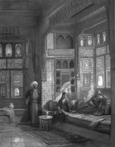

Haremde ve selamlıkta; evvel zamanın evlerinin birçoğunda; her türlü monotonluk, yani yeknesaklık katiyen yoktu. Bir gün öteki güne benzemezdi. Hadem ü haşem,[5] sayılmış günlere ayrılarak vazifelendirilmişlerdi. Hanımlarla beylerin, beyefendilerin, paşaların, hatta sultanlarla şehzadelerin kendilerini mukayyet kılan meşgaleleri vardı. Hademenin de mutlaka gününde yapacağı iş vardı. Denilebilir ki taksim-i âmâl[6] mükemmeldi.
Benim tanıdığım, gidip geldiğim konaklarda çocukluğumdan beri hep şöyle şeyler görürdüm: Hanımefendi, Tanrı’nın sabahı kalkar; erkeğini selamlığa çıkardıktan sonra dosdoğru en alt kata iner; kileri, yemek odasını, kahve ocağını, kızların yatak odasını dolaşır; o gün neyin günü ise o işlere bakanları kontrol eder; lazım gelen emirleri verir; misafir yatak odalarına, salonlara girer çıkar; günlük odasına çekilir; ne yapacaksa yapardı. Yani oya mı işleyecek; gergefle mi meşgul olacak; yoksa okuyacak mı, yazacak mı, odasında yapardı. Veyahut gece misafirleri varsa onlarla, onlara ikram ü izazla[7] meşgul olurdu. Ev hanımlığının şartı buydu. Evlerinde meşgul ve tertipli olmayan hanımların ise su-i şöhretleri[8] vardı. Bu gibileri kimse sevmezdi ve çekiştirirlerdi.
Harem Meşgalesi
Evvela mükemmel bir kilere sahip olmakla başlardı. Bundan evvel de iyi bir kilerciye sahip olmak icap ederdi. Yemek, içmek işinin temiz ve emniyetli ellere verilmesindeki faydaya itimat vardı. Bundan sonra diğer ev işlerine ehemmiyet verilirdi. Çamaşırla ütünün; okutulacak küçük kızların; bir saz öğrenecek hanımın veya halayığın ve mesela isterse eğer, harem ağasının; konakta büyük temizliğin, yani sabunlarla sofaların, merdivenlerin, taşlıkların fırçalanmasının, silinmesinin; davetli ve leylî veya neharî[9] misafirler için hazırlıkların şaşırmayan günleri vardı. Bunlarla beraber bazı ev meşgaleleri daha vardı. Evdeki veyahut mahallelerdeki hamamlara gidip yıkanmak ve bu güzel işi mutlaka en aşağı on günde bir yapabilmek. “Nezafet[10] imandandır” derlerdi. Nazif ve nezafetli olmayanlardan pek hoşlanmazlardı.
Çalışmaların birisi de haremde turşular, reçellerle şuruplar kaynatmak, kavurmaları büyük kavanozlara yerleştirmek gibi faaliyetlere inhisar ederdi. (Az kalsın tekel ederdi diyecektim!).
Kış gecelerinde güğümler içinde, suda kestane ve mısır buğdayı pişirmek bile bu teşrifatın bir parçasıydı. Bu işi eski kalfaların, bazılarının odalarında yaparlar; tabak tabak efendilerine ve misafirlerinde dağıtırlardı.

İşte muhterem karilerim,[11] eski evlerin harem daireleri böyle işler görürler ve yaptıklarıyla mağrur olurlardı. Bir de bacıların yaprak dolması hazırlamaları vardı. Yaprakları, ayrı ayrı ayırmak, makasla keserek düzeltmek gibi. Bu da ayrıca bir âlemdi.
Selamlık Tarafı
Konaklarda selamlık daireleri derecelerine göre hizmetlere ayrılan ağalara, uşaklara teslim olunarak bunlara başağa ve hepsine kâhya efendi nezaret ederdi. Bu böyle olduğu gibi, küçük konaklar ve orta halli evlerde dahi eğer bir uşak ve bir ayvaz varsa, selamlığın bütün işlerini görürlerdi. Aşçılar mutlaka erkekti. Haremde yapılan yemekler fevkalade faslından ma’dud[12] ve muhteremdiler. Halayıkları, uşakları var olmayan hanelerde de bu hizmetleri evin hanımı yapardı ve zevcinden eve yalnız erzak getirmesini isterdi. Pazarlardan sebzeleri, etleri efendileri alır getirirlerdi ve her ay kilerlerini doldurarak, kolayca halli dava ederlerdi. Bunların hepsi demekti ki evvel zaman içinde bir aile meşgalesi vardı ve bu herkesi evine sımsıkı bağlardı. Amma istisnası yok muydu? Elbette vardı. Fakat bunlar o bağların aralarından birer kaçamak mahiyetinde kalırlardı. Ekseriyetle işin ucu kaçırılmazdı.
Akşam, 7 Nisan 1949